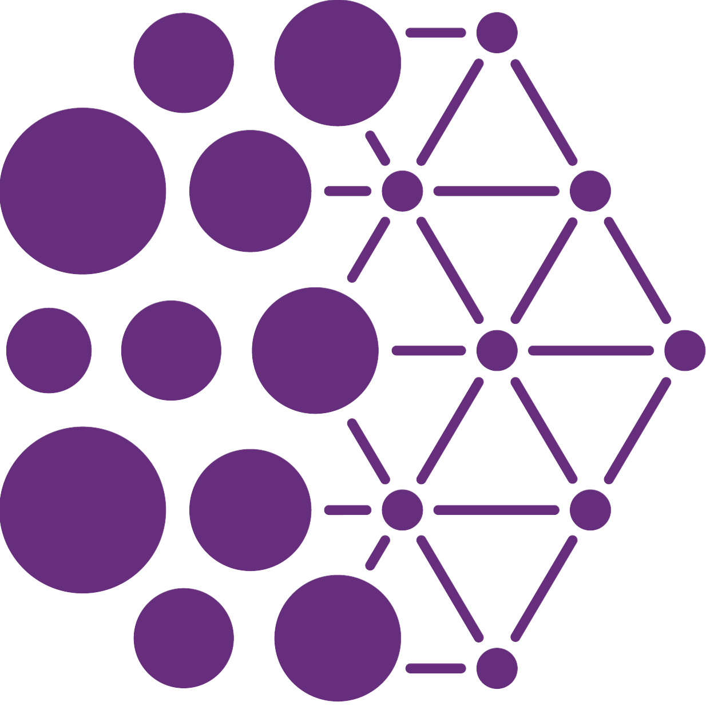
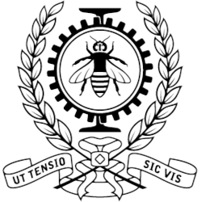
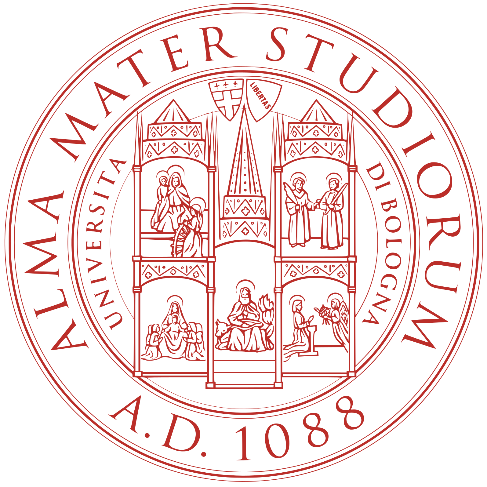

Sono un dottorando presso il Mila e il Polytechnique Montréal, sotto la supervisione del Prof. Sarath Chandar e della Prof.ssa Amal Zouaq. La mia ricerca si concentra sugli aspetti fondamentali del Natural Language Processing (NLP), in particolare sull'analisi dei Large Language Models (LLM).
Prima del mio dottorato, ho conseguito un Master in Intelligenza Artificiale presso l'Università di Bologna. Durante il mio percorso di studi magistrale, sono stato l'autore principale dell'articolo TWOLAR: a TWO‑step LLM‑Augmented distillation method for passage Reranking, accettato alla European Conference on Information Retrieval (ECIR 2024). Questo lavoro integra la distillazione delle conoscenze con approcci di ranking basati su modelli linguistici, dimostrando prestazioni all'avanguardia nei principali benchmark per il passage reranking.



Set 2021 – Ott 2023